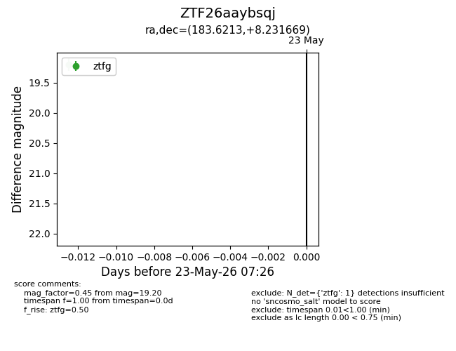
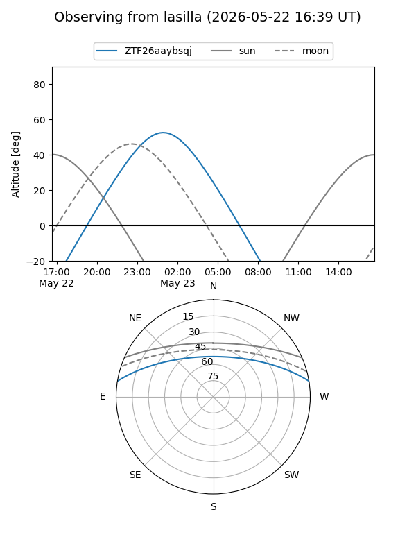
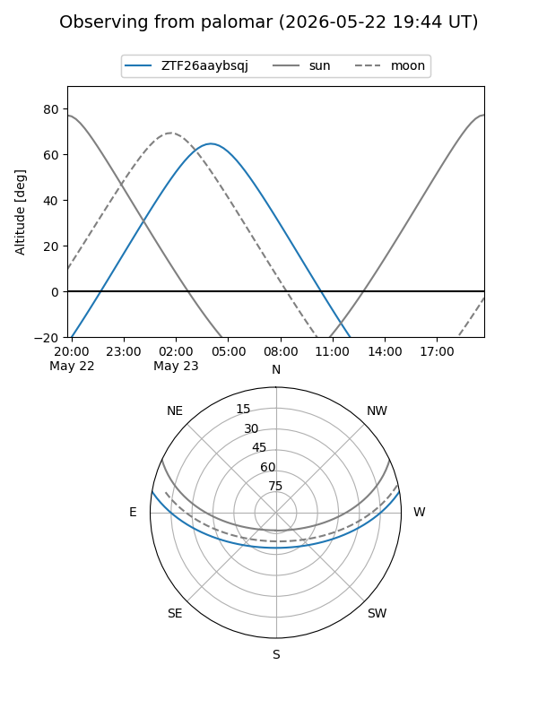

ZTF26aaybsqj
Target ZTF26aaybsqj at 2026-05-23 07:27
Aliases and brokers:
lsst-FINK: link
lsst-Lasair: link
lsst-ALeRCE: link
ztf-FINK: link
ztf-Lasair: link
ztf-ALeRCE: link
alt names
ZTF26aaybsqj (ztf,fink_ztf)
Coordinates:
equatorial (ra, dec) = 183.6213,+8.23167
equatorial (HMS+DMS) = 12:14:29.11,+08:13:54.01
galactic (l, b) = (276.3840,+69.17651)
Flags:
Photometry:
last ztfg=19.20
1 ztfg detections
Lightcurve

Visibility


Additional plots